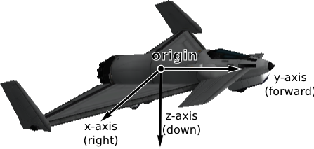
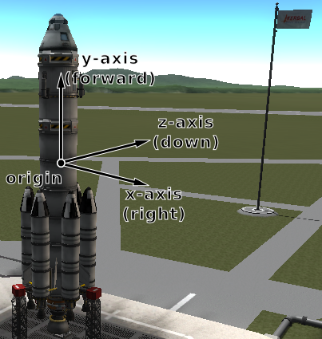
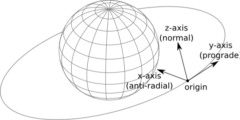
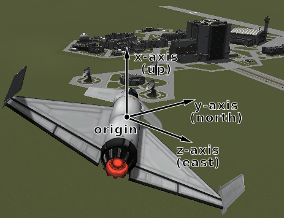
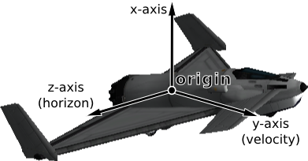

Vessel¶
- class Vessel¶
These objects are used to interact with vessels in KSP. This includes getting orbital and flight data, manipulating control inputs and managing resources.
- name¶
Gets or sets the name of the vessel.
Type: string
- type¶
Gets or sets the type of the vessel.
Type: VesselType
- situation¶
Gets the situation the vessel is in.
Type: VesselSituation
- met¶
Gets the mission elapsed time in seconds.
Return type: double
- flight([reference_frame = Vessel.surface_reference_frame])¶
Gets a Flight object that can be used to get flight telemetry for the vessel, in the specified reference frame.
Parameters: reference_frame (ReferenceFrame) – Defaults to the surface reference frame of the vessel. Return type: Flight
- target¶
Gets or sets the target vessel. Returns None if there is no target. When setting the target, the target cannot be the current vessel.
Type: Vessel
- control¶
Gets a Control object that can be used to manipulate the vessel’s control inputs. For example, its pitch/yaw/roll controls, RCS and thrust.
Return type: Control
- auto_pilot¶
Gets an AutoPilot object, that can be used to perform simple auto-piloting of the vessel.
Return type: AutoPilot
- resources¶
Gets a Resources object, that can used to get information about, and manage, the vessels resources.
Return type: Resources
- parts¶
Gets a Parts object, that can used to interact with the parts that make up this vessel.
Return type: Parts
- comms¶
Gets a Comms object, that can used to interact with RemoteTech for this vessel.
Return type: Comms Note
Requires RemoteTech to be installed.
- mass¶
Gets the total mass of the vessel (including resources) in kg.
Return type: double
- dry_mass¶
Gets the total mass of the vessel (excluding resources) in kg.
Return type: double
- cross_sectional_area¶
Gets the cross sectional area of the vessel in \(m^3\). See Flight.drag.
Return type: double Note
Calculated using Ferram Aerospace Research if it is installed. Otherwise, calculated using KSPs stock aerodynamic model
- thrust¶
Gets the total thrust of all active engines combined in Newtons.
Return type: double Note
Assumes all active engines are pointing in the same direction.
- specific_impulse¶
Gets the combined specific impulse of all active engines in seconds.
Return type: double
- reference_frame¶
Gets the reference frame that is fixed relative to the vessel, and orientated with the vessel.
- The origin is at the center of mass of the vessel.
- The axes rotate with the vessel.
- The x-axis points out to the right of the vessel.
- The y-axis points in the forward direction of the vessel.
- The z-axis points out of the bottom off the vessel.
Return type: ReferenceFrame Vessel reference frame origin and axes for the Aeris 3A aircraft
Vessel reference frame origin and axes for the Kerbal-X rocket
- orbital_reference_frame¶
Gets the reference frame that is fixed relative to the vessel, and orientated with the vessels orbital prograde/normal/radial directions.
- The origin is at the center of mass of the vessel.
- The axes rotate with the orbital prograde/normal/radial directions.
- The x-axis points in the orbital anti-radial direction.
- The y-axis points in the orbital prograde direction.
- The z-axis points in the orbital normal direction.
Return type: ReferenceFrame Note
Be careful not to confuse this with ‘orbit’ mode on the navball.
Vessel orbital reference frame origin and axes
- surface_reference_frame¶
Gets the reference frame that is fixed relative to the vessel, and orientated with the surface of the body being orbited.
- The origin is at the center of mass of the vessel.
- The axes rotate with the north and up directions on the surface of the body.
- The x-axis points upwards, normal to the body being orbited (from the center of the body towards the center of mass of the vessel).
- The y-axis points north, and tangential to the surface of the body (the direction in which a compass would point when on the surface)
- The z-axis points east, and tangential to the surface of the body (east on a compass when on the surface).
Return type: ReferenceFrame Note
Be careful not to confuse this with ‘surface’ mode on the navball.
Vessel surface reference frame origin and axes
- surface_velocity_reference_frame¶
Gets the reference frame that is fixed relative to the vessel, and orientated with the velocity vector of the vessel relative to the surface of the body being orbited.
- The origin is at the center of mass of the vessel.
- The axes rotate with the vessel’s velocity vector.
- The y-axis points in the direction of the vessel’s velocity vector.
- The z-axis points in a the plane of the horizon.
Return type: ReferenceFrame Vessel surface velocity reference frame origin and axes
- position(reference_frame)¶
Returns the position vector of the center of mass of the vessel in the given reference frame.
Parameters: reference_frame (ReferenceFrame) – Return type: Vector3
- velocity(reference_frame)¶
Returns the velocity vector of the center of mass of the vessel in the given reference frame.
Parameters: reference_frame (ReferenceFrame) – Return type: Vector3
- rotation(reference_frame)¶
Returns the rotation of the center of mass of the vessel in the given reference frame.
Parameters: reference_frame (ReferenceFrame) – Return type: Quaternion
- direction(reference_frame)¶
Returns the direction in which the vessel is pointing, as a unit vector, in the given reference frame.
Parameters: reference_frame (ReferenceFrame) – Return type: Vector3
- angular_velocity(reference_frame)¶
Returns the angular velocity of the vessel in the given reference frame. The magnitude of the returned vector is the rotational speed in radians per second, and the direction of the vector indicates the axis of rotation (using the right hand rule).
Parameters: reference_frame (ReferenceFrame) – Return type: Vector3